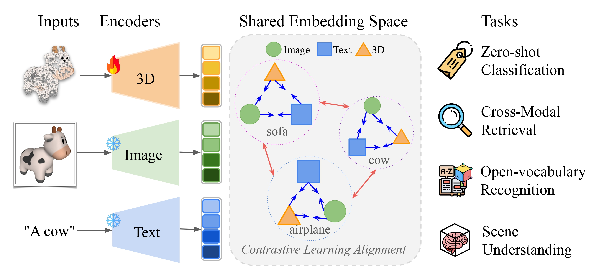
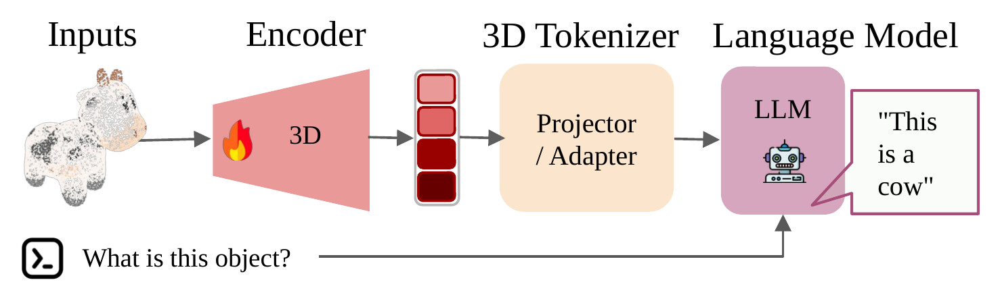
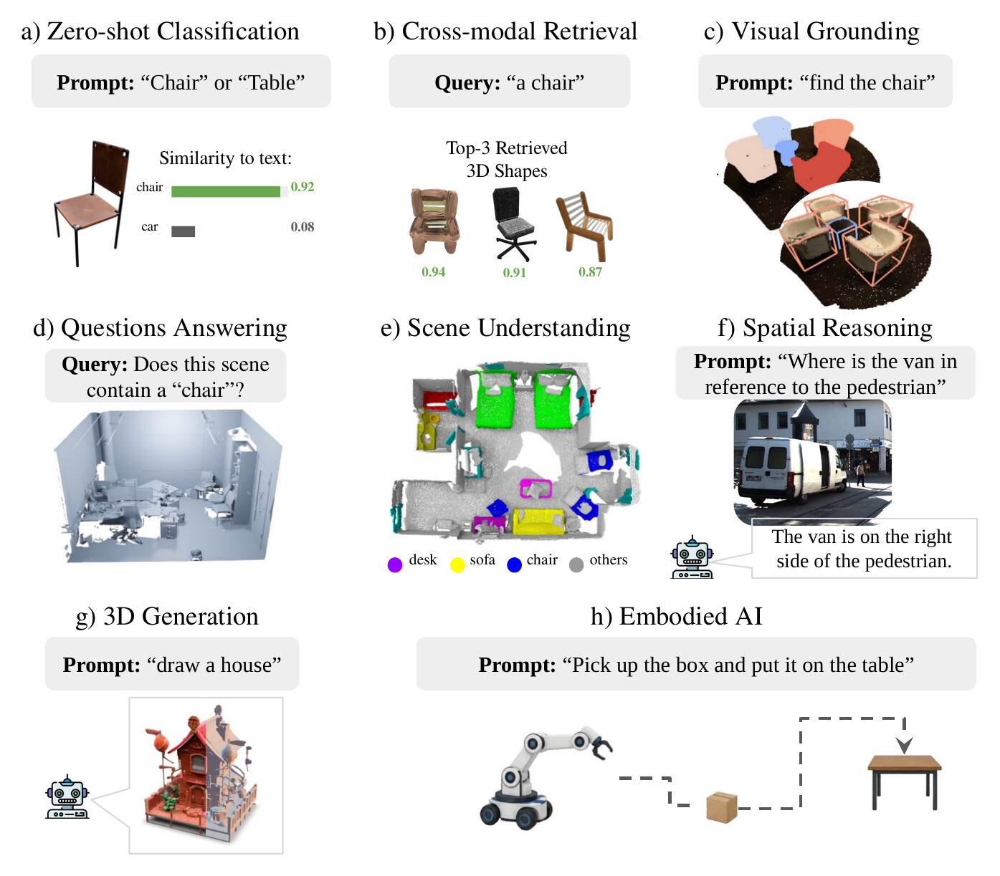

Vision-Language Models (VLMs) are reshaping computer vision by aligning visual and textual embeddings, allowing models to recognize visual concepts and reason about them using natural language. Traditional 3D deep-learning models, however, are typically trained for specific tasks, such as classification, segmentation, or detection, and do not naturally support cross-modal retrieval from their embedding spaces using text or images as queries. To address this issue, Contrastive Language-Image Pretraining (CLIP)-based methods align 3D embeddings with pretrained image and text representations, giving rise to 3D Vision-Language Models (3D VLMs) that support zero-shot classification and cross-modal retrieval, and open-vocabulary recognition of 3D shapes. This tutorial provides an overview of 3D VLMs, ranging from basic definitions of 3D representations and their encoding into embeddings to cross-modal contrastive alignment, modern multimodal frameworks, and 3D Vision-Large Language Models (3D VLLMs). We present the main definitions of contrastive learning for multimodal embedding alignment and highlight recent advances in language-guided 3D Gaussian splatting, 3D shape generation, and embodied AI for robotics.
The tutorial is given in two parts, with a hands-on session at the end of Part 1. See the schedule for the full program and Slides & Code for the material.
A 3D VLM asks whether a 3D object or scene can be connected to language, and answers with a similarity score or a ranking. A 3D Vision-Large Language Model (3D VLLM) goes further: it uses the 3D information to understand a question, reason about it, and answer in language.

From fixed labels, to open vocabulary, to language generation: five families, distinguished by where language connects to the 3D pipeline.
| Family | Output | Methods | Tasks |
|---|---|---|---|
| 1. Closed-set 3D recognition | Class label (no language: a fixed set of classes) | MVCNN, PointNet, DGCNN, Point-BERT | Classification, part segmentation, detection |
| 2. Projection-based adaptation | View–text similarity (render views, reuse frozen CLIP) | PointCLIP, PointCLIP V2, EPCL | Zero-shot and few-shot classification |
| 3. Native joint embeddings | Shared 3D–image–text space (train a 3D encoder into CLIP space) | ULIP, ULIP-2, OpenShape, Uni3D, 3D-MRL | Zero-shot classification, text/image → 3D retrieval, open-vocabulary recognition |
| 4. Language-aligned 3DGS | Language features in 3D (attach CLIP features to Gaussians) | UniGS, CLIP-GS, OpenGaussian, SceneSplat | Open-vocabulary segmentation, scene understanding, object grouping and editing, Gaussian retrieval |
| 5. 3D VLLMs | Generated text (3D tokens fed to an LLM) | PointLLM, ShapeLLM, Multi-3DLLM, N3D-VLM | Captioning, 3D question answering, spatial reasoning, instruction following |
One aligned space (or one LLM), many tasks. They differ in what they output:

If you find our work useful, please consider citing our paper.
@misc{lobo2026overview3dvisionlanguagemodels,
title={An overview of 3D Vision-Language Models},
author={Márcus Lobo and Vitor Matias and Afonso Paiva and Jeová Farias and Tiago Novello and Moacir Ponti},
year={2026},
eprint={2609.05583},
archivePrefix={arXiv},
primaryClass={cs.CV},
url={https://arxiv.org/abs/2609.05583},
}
This work was supported in part by the São Paulo Research Foundation (FAPESP), under grants #2024/09462-1 and #2026/01721-3, and by the Conselho Nacional de Desenvolvimento Científico e Tecnológico (CNPq) under fellowship grant #315158/2023-9.